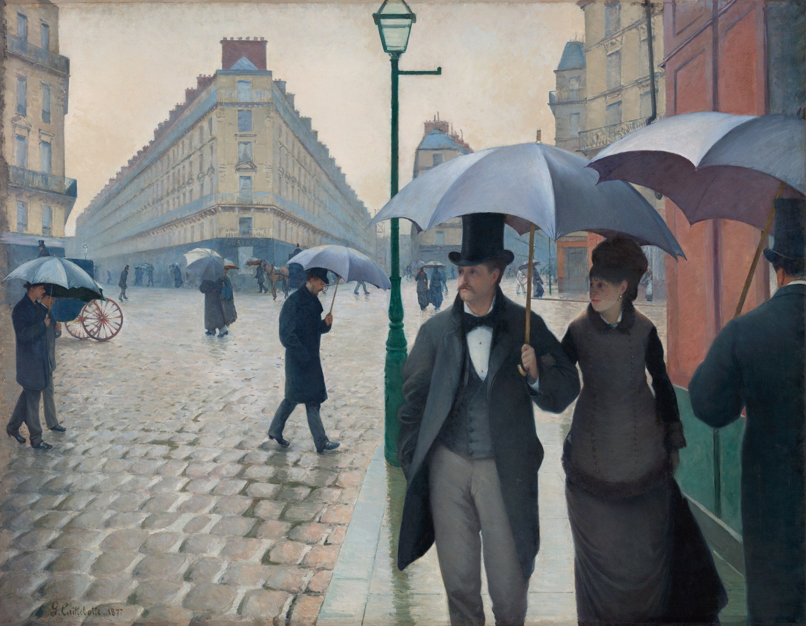

巴黎街道，雨天 Paris Street; Rainy Day
卡耶博特 · 1877年 · 芝加哥艺术博物馆
Gustave Caillebotte · 1877 · The Art Institute of Chicago
图片：芝加哥艺术博物馆开放资源（CC0），公有领域 / Image: The Art Institute of Chicago (CC0), public domain

发现 · Discover
路灯 The lamppost
中间这根路灯和街道的地平线，把画面分成了四格。路灯也把前景和远处隔开。
The lamppost and the horizon divide the picture into four parts. The lamppost also separates the foreground from the distance.
前景的一对 The couple
前景这对撑伞的夫妇，走在都灵街靠近莫斯科街的路口。
The couple in the foreground are walking along the rue de Turin, near its corner with the rue de Moscou.
湿漉漉的街道 The wet street
在当时，画雨景很新鲜。卡耶博特借此画出了湿漉漉的石板路上的倒影。
Painting a rainy scene was a new idea at the time. It let Caillebotte paint the reflections on the wet cobblestones.
新的巴黎 The new Paris
画这个路口时，奥斯曼已经把巴黎从中世纪城市改造成了现代首都：宽阔的林荫大道、人行道和下水道。
By the time this was painted, Haussmann had transformed Paris from a medieval city into a modern capital, with broad boulevards, pavements and sewers.
冬天的下午 A winter afternoon
艺术史学家认为，画里的光线说明这是一个冬天的下午。
Art historians believe the light shows a winter afternoon.
清晰的线条 Clear lines
和其他印象派画家不同，卡耶博特的线条清晰、结构严谨，几乎看不到笔触。
Unlike his fellow Impressionists, Caillebotte used clear lines and a strict structure, with brushstrokes that are barely visible.
火车站旁边 Near the station
这个路口当时叫莫斯科路口，就在圣拉扎尔火车站东边，今天叫都柏林广场。
This crossroads, then called the Carrefour de Moscou, lies just east of the Gare Saint-Lazare. Today it is the Place de Dublin.
故事 · The story
ACT I 第一幕 · 新的巴黎 The new Paris
19世纪中叶，奥斯曼把巴黎改造成一座现代城市。卡耶博特选了圣拉扎尔火车站附近一个新建的路口，画下雨中的行人。
In the mid-19th century, Haussmann rebuilt Paris as a modern city. Caillebotte chose a new crossroads near the Gare Saint-Lazare and painted people walking there in the rain.
1877年 · 芝加哥艺术博物馆 / 1877 · The Art Institute of Chicago
ACT II 第二幕 · 1877年的画展 The 1877 exhibition
1877年4月，这幅画在第三届印象派画展上展出。那次画展很大程度上是卡耶博特自己组织的。这幅画因为逼真和精确，广受好评。
In April 1877, the painting was shown at the third Impressionist exhibition, which Caillebotte had largely organised himself. It was widely praised for its realism and precision.
1877年 · 芝加哥艺术博物馆 / 1877 · The Art Institute of Chicago
ACT III 第三幕 · 来到芝加哥 In Chicago
之后几十年，它一直留在卡耶博特家族手里，很少有人看到。1964年，芝加哥艺术博物馆买下了它，人们才重新认识了卡耶博特。
For decades it stayed in the Caillebotte family, rarely seen. In 1964 the Art Institute of Chicago acquired it, and Caillebotte's work was rediscovered.
1877年 · 芝加哥艺术博物馆 / 1877 · The Art Institute of Chicago
雨中的新巴黎。 The new Paris, in the rain.
作品档案 · Artwork record
| 画家（生卒年） · Artist (dates) | 古斯塔夫·卡耶博特（1848–1894） / Gustave Caillebotte (1848–1894) |
|---|---|
| 画名 · Title | 巴黎街道，雨天 / Paris Street; Rainy Day |
| 年份 · Date | 1877年 / 1877 |
| 材质 · Medium | 布面油画 / Oil on canvas |
| 尺寸 · Dimensions | 212.2 × 276.2 cm |
| 收藏地 · Collection | 芝加哥艺术博物馆（1964年购入） / The Art Institute of Chicago (acquired 1964) |
| 来源说明 · Credit line | Charles H. and Mary F. S. Worcester Collection |
关于画家 · About the artist
古斯塔夫·卡耶博特（1848–1894），法国画家，出身富裕家庭。他是印象派画家的朋友和支持者，1877年的印象派画展很大程度上是他组织的。他的巴黎街景线条清晰、结构严谨，和其他印象派画家很不一样。
Gustave Caillebotte (1848–1894) was a French painter from a wealthy family. A friend and supporter of the Impressionists, he largely organised their 1877 exhibition. His views of Paris, with their clear lines and strict structure, are quite unlike the work of his fellow Impressionists.
更多卡耶博特的画 · More by Gustave Caillebotte